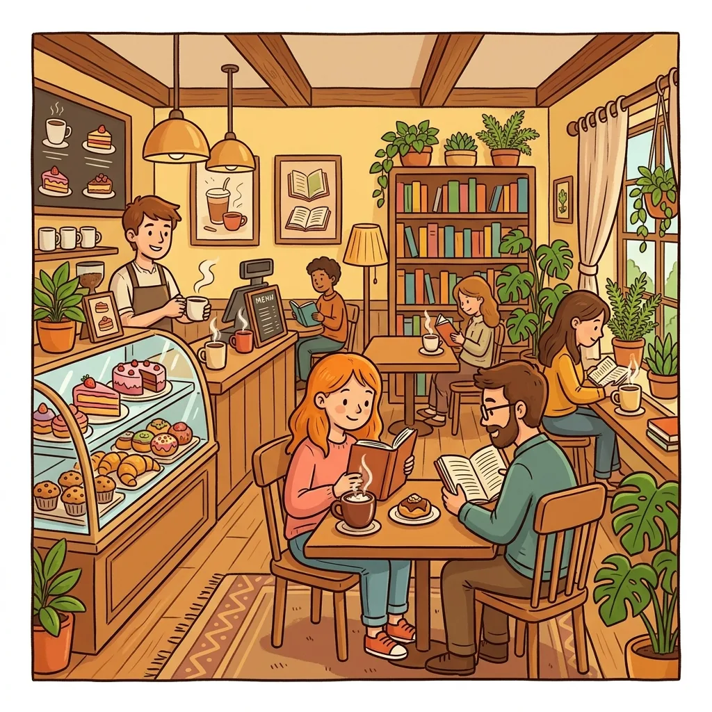
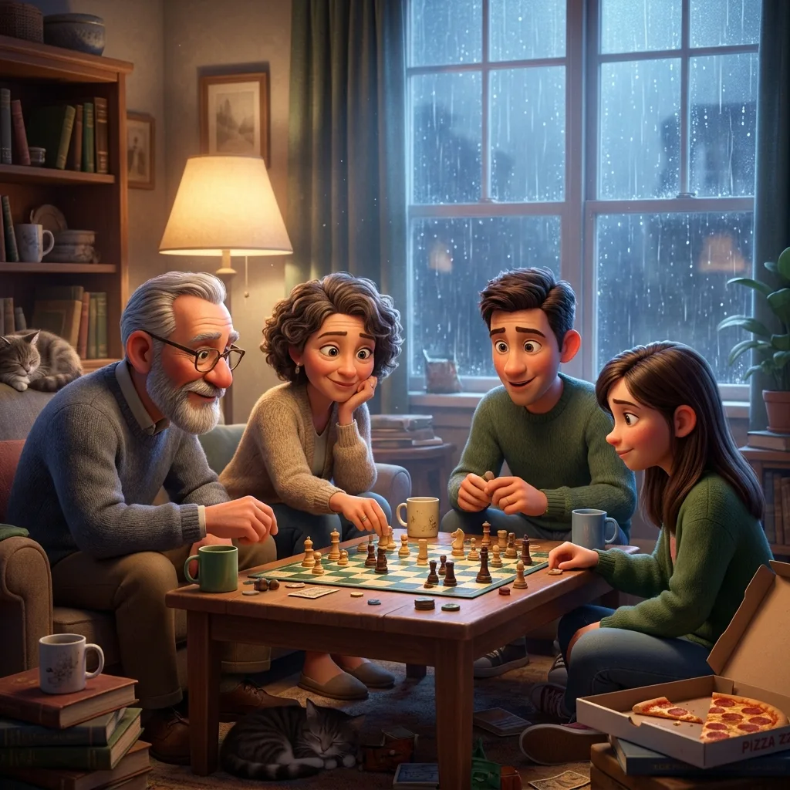

Spot the Difference as a Speech Therapy Tool: Barrier Games That Run Themselves
Ask an SLP for the highest-mileage low-prep activity in the bag and barrier games are usually the answer: two players, a visual barrier, and a communication gap that only language can close. The catch has always been materials — commercial barrier game sets are expensive, and the same six scenes go stale by November. Spot-the-difference pairs fix the materials problem completely: two almost-identical pictures are a barrier game, and a generator makes them unlimited.

What a barrier game is (and why they work)
In a barrier game, each player has a picture (or board) the other can't see, and they must talk their way to a goal — describing, questioning, comparing, giving directions. Because the listener genuinely doesn't know what the speaker sees, every utterance carries real information; the child isn't performing language for a therapist, they're using it, and the game gives immediate natural feedback when a message fails ("wait, WHICH snowman?"). That authentic information gap is the same mechanism ESL teachers exploit — our ESL activities guide is the classroom cousin of this article.
Setup and script
- Print a pair — picture A for you, picture B for the child (or one for each of two children). A folder standing upright is barrier enough.
- Frame it: "Our pictures are ALMOST the same, but some things are different. Let's find the differences without peeking — only talking."
- Take turns describing a region: "In my picture, the snowman has a red scarf. What about yours?" — "Mine is blue!" Difference found, both circle it.
- Count down to the win ("two left!") and review: the child retells every difference at the end — a built-in second rep of the target structures.
The same page also runs cooperatively against a timer, or as classic side-by-side spot-the-difference for younger clients who aren't ready for the barrier yet (difficulty tuning by age is in our preschool guide).
Language targets, by goal
- Describing & attributes: color, size, number, position — the game punishes vague descriptions naturally ("the tree" fails when there are four trees).
- Prepositions & spatial language: "next to the house", "under the bridge", "on the left" — spatial precision is the whole game.
- Question formation: flip the frame so the child must ask: "Does your dog have a bone? Is your door open or closed?"
- Comparatives & contrast: "Mine is bigger / yours has more" — compare-contrast structures fall out of every single turn.
- Vocabulary: pick the theme to match the unit — farm, ocean, space, garden — and pre-teach three scene words before the barrier goes up.
Articulation carryover on the same page
For artic clients, the puzzle is a carryover machine: scan the scene for the child's target sound ("this garden picture is full of /s/ — sun, sandbox, sunflower"), then run the barrier game with the rule that every description must name the target object. You get dozens of spontaneous productions at conversation level while the child is busy winning a game — the entire point of carryover. Structured-to-spontaneous in one sheet.
Groups, teletherapy, and mixed goals
Groups: pairs play simultaneously with different puzzle pairs; rotate sheets between rounds — unlimited printing means no two groups fight over the good scene. Teletherapy: screen-share one picture while the child holds the printed twin (email the PDF ahead), or use the barrier-free timed mode on screen. Mixed goals: one child works questions while the partner works descriptions — the same game serves both IEPs at once, which is the real reason SLPs love barrier games.
Sample goal ideas
Adapt to your caseload, but the shape is: "During structured barrier-game activities, [child] will produce [target: attribute descriptions / spatial prepositions / grammatically complete questions / compare-contrast sentences] in 8 of 10 opportunities across 3 consecutive sessions, given [level of cueing]." The nice property: the game generates countable opportunities at a steady rate, so data collection is just tallying turns.

Unlimited free picture pairs — four themes, difficulty from preschool to sneaky, answer keys included. Print two copies and stand up a folder.
Open the free generator
As always: an activity resource, not clinical advice — targets, cueing, and progression belong to the treating SLP.